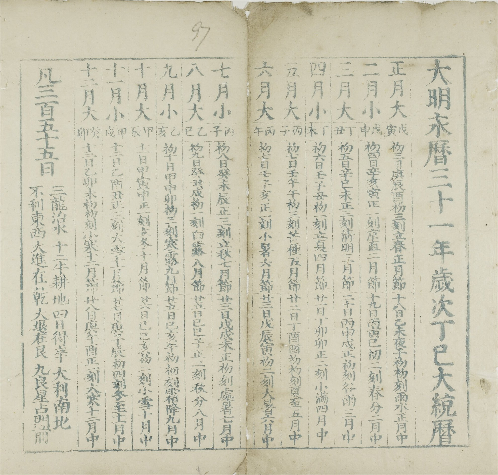
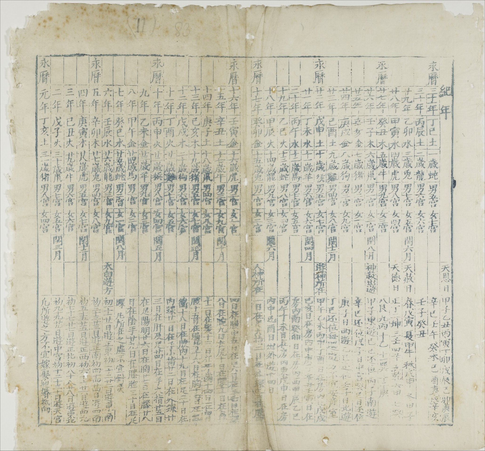

Datong Calendar for the 31st Year of the Yongli Reign (1677)
Photo source: Bodleian Library Sinica 88
Photo copyright holder: © Bodleian Libraries, University of Oxford (This page is not associated with the copyright holder)
Terms of Use: CC BY-NC 4.0 license. For more information, please see https://digital.bodleian.ox.ac.uk/terms/
Note: The images shown below have been cropped and resized from the originals. Only a few pages containing the information of conjunctions, intercalary months and solar terms are shown here. The digital version of the whole book can be obtained from the source link above.
Photo

Text
大 明 永 曆 三 十 年 大 統 曆
皇曆未至本藩權依
大統曆法命官考訂刊行俾
中興臣子咸知
正朔用是為識
Translation
The book title is Datong Calendar for the Thirty-First Year of the Yongli Reign in the Great Ming Dynasty.
The text roughly states that the emperor's calendar for the year had not arrived and the Prince of Yanping (governor of the Zheng state) expediently ordered officials to produce and promulgate the calendar according to the Datong system, so that the civilians under his governance could use it for their daily lives.
Note: The emperor's calendar of the Southern Ming dynasty was no longer produced after the death of the Youngli emperor in 1662. This calendar became the de facto official calendar of the state.
Photo

Text
| 大明永曆三十一年歲次丁巳大統曆 | |||
| 正月大 | 戊寅 | 初三日庚辰酉初三刻立春正月節 | 十八日乙未夜子初初刻雨水正月中 |
| 二月小 | 戊申 | 初四日辛亥寅正一刻京直二月節 | 十九日丙寅巳初二刻春分二月中 |
| 三月大 | 丁丑 | 初五日辛巳未正三刻清明三月節 | 二十日丙申戌正初刻谷雨三月中 |
| 四月小 | 丁未 | 初六日壬子丑初一刻立夏四月節 | 廿一日丁卯卯正二刻小滿四月中 |
| 五月大 | 丙子 | 初七日壬午午初三刻芒種五月節 | 廿二日丁酉酉初初刻夏至五月中 |
| 六月大 | 丙午 | 初七日壬子亥正一刻小暑六月節 | 廿三日戊辰寅初二刻大暑六月中 |
| 七月小 | 丙子 | 初八日癸未辰正三刻立秋七月節 | 廿三日戊戌未正初刻處暑七月中 |
| 八月大 | 乙巳 | 初九日癸丑戌初一刻白露八月節 | 廿五日己巳子正二刻秋分八月中 |
| 九月小 | 乙亥 | 初十日甲申卯初三刻寒露九月節 | 廿五日己亥午初初刻霜降九月中 |
| 十月大 | 甲辰 | 十一日甲寅申正一刻立冬十月節 | 廿六日己巳亥初二刻小雪十月中 |
| 十一月小 | 甲戌 | 十二日乙酉丑正三刻大雪十一月節 | 廿七日庚子辰初四刻冬至十一月中 |
| 十二月大 | 癸卯 | 十三日乙卯未初初刻小寒十二月節 | 廿八日庚午酉正一刻大寒十二月中 |
| 凡三百五十五日 (divination content omitted) | |||
Translation
| Calendar Dates for the 31st Year of the Yongli Reign (sexagenary year Ding Si) | |||
| 1 L | Wu Yin | J1: 3, Geng Chen, (17,3) | Z1: 18, Yi Wei, (23,0) |
| 2 S | Wu Shen | J2: 4, Xin Hai, (4,1) | Z2: 19, Bing Yin, (9,2) |
| 3 L | Ding Chou | J3: 5, Xin Si, (14,3) | Z3: 20, Bing Shen, (20,0) |
| 4 S | Ding Wei | J4: 6, Ren Zi (1,1) | Z4: 21, Ding Mao, (6,2) |
| 5 L | Bing Zi | J5: 7, Ren Wu, (11,3) | Z5: 22, Ding You, (17,0) |
| 6 L | Bing Wu | J6: 7, Ren Zi, (22,1) | Z6: 23, Wu Chen, (3,2) |
| 7 S | Bing Zi | J7: 8, Gui Wei, (8,3) | Z7: 23, Wu Xu, (14,0) |
| 8 L | Yi Si | J8: 9, Gui Chou, (19,1) | Z8: 25, Ji Si, (0,2) |
| 9 S | Yi Hai | J9: 10, Jia Shen, (5,3) | Z9: 25, Ji Hai, (11,0) |
| 10 L | Jia Chen | J10: 11, Jia Yin, (16,1) | Z10, 26, Ji Si, (21,2) |
| 11 S | Jia Xu | J11: 12, Yi You, (2,3) | Z11: 27, Geng Zi (7,4) |
| 12 L | Gui Mao | J12: 13, Yi Mao, (13,0) | Z12: 28, Geng Wu, (18,1) |
| Total Number of Days: 355 (divination content omitted) | |||
Column Description
- The first column is the Chinese month number followed by either S (short month) or L (long month). The S months had 29 days and L months had 30 days. The total number of days in the year was therefore 30NL + 29NS, where NL is the number of L months and NS is the number of S months. The calculated number matches the value given in the last row of the table.
- The second column gives the sexagenary date cycle of the first day (conjunction day) in the Chinese month.
- The last two columns list the dates and times of the solar terms in the year.
- Solar terms are labelled using the convention on the solar term page. They are shorthand notations of the alternative Chinese names. For example, Z5 refers to the Zhongqi (major solar term) associated with month 5 (五月中), which is Summer Solstice (夏至); J6 refers to the Jieqi (minor solar term) associated with month 6 (六月節), which is Slight Heat (小暑).
- The date of a solar term is given by a number indicating the date in the Chinese month and the sexagenary date cycle. For example, "J2: 4, Xin Hai" means that J2 was on the 4th day (of month 2) and its sexagenary date cycle was Xin Hai.
- Time is indicated by two numbers (x,y), where x is an integer between 0 and 23 and y is an integer between 0 and 4. If y≠4, (x,y) means that the time is between 14.4y minutes and 14.4(y+1) minutes past x o'clock. If y=4, (x,y) means that the time is between 57.6 minutes past x o'clock and (x+1) o'clock. For exampe, (20,3) refers to the time interval between 20:43:12 and 20:57:36; (2,4) refers to the time interval between 2:57:36 and 3:00:00.
- Hence, "J10: 11, Jia Yin, (16,1)" in the 10L row means that J10 occurred in the time interval between 16:14:24 and 16:28:48 on the 11th day of month 10 and the sexagenary date cycle was Jia Yin. This date corresponds to November 5th, 1677 in the Gregorian calendar.
Note:According to the calculation of the Datong system, the conjunction associated with the 7th month was on a Yi Hai day (July 29th, 1677), which was one day earlier than the Bing Zi day (July 30th, 1677) given in the calendar. All other conjunction days in the calendar match the calculation of the Datong system. The dates and times of all solar terms in the calendar agree with the calculation of the Datong system.
Photo

Text
The last row in the photo is omitted in the following table.
| 紀年 | ||||||
| 永 曆 | 三十一年 | 丁巳土 | 一歲蛇 | 男五宮 | 女七宮 | |
| 三十年 | 丙辰土 | 二歲龍 | 男六宮 | 女六宮 | ||
| 廿九年 | 乙卯水 | 三歲兔 | 男七宮 | 女五宮 | 閏六月 | |
| 廿八年 | 甲寅水 | 四歲虎 | 男八宮 | 女四宮 | ||
| 廿七年 | 癸丑木 | 五歲牛 | 男九宮 | 女三宮 | ||
| 廿六年 | 壬子木 | 六歲鼠 | 男一宮 | 女二宮 | 閏八月 | |
| 廿五年 | 辛亥金 | 七歲豬 | 男二宮 | 女一宮 | ||
| 廿四年 | 庚戌金 | 八歲狗 | 男三宮 | 女九宮 | ||
| 廿三年 | 己酉土 | 九歲雞 | 男四宮 | 女八宮 | 閏十二月 | |
| 廿二年 | 戊申土 | 十歲猴 | 男五宮 | 女七宮 | ||
| 廿一年 | 丁未水 | 十一歲羊 | 男六宮 | 女六宮 | 閏四月 | |
| 二十年 | 丙午水 | 十二歲馬 | 男七宮 | 女五宮 | ||
| 十九年 | 乙巳火 | 十三歲蛇 | 男八宮 | 女四宮 | ||
| 十八年 | 甲辰火 | 十四歲龍 | 男九宮 | 女三宮 | 閏六月 | |
| 十七年 | 癸卯金 | 十五歲兔 | 男一宮 | 女二宮 | ||
| 十六年 | 壬寅金 | 十六歲虎 | 男二宮 | 女一宮 | ||
| 十五年 | 辛丑土 | 十七歲牛 | 男三宮 | 女九宮 | 閏十月 | |
| 十四年 | 庚子土 | 十八歲鼠 | 男四宮 | 女八宮 | ||
| 十三年 | 己亥木 | 十九歲豬 | 男五宮 | 女七宮 | 閏正月 | |
| 十二年 | 戊戌木 | 二十歲狗 | 男六宮 | 女六宮 | ||
| 十一年 | 丁酉火 | 廿一歲雞 | 男七宮 | 女五宮 | ||
| 十年 | 丙申火 | 廿二歲猴 | 男八宮 | 女四宮 | 閏五月 | |
| 九年 | 乙未金 | 廿三歲羊 | 男九宮 | 女三宮 | ||
| 八年 | 甲午金 | 廿四歲馬 | 男一宮 | 女二宮 | ||
| 七年 | 癸巳水 | 廿五歲蛇 | 男二宮 | 女一宮 | 閏八月 | |
| 六年 | 壬辰水 | 廿六歲龍 | 男三宮 | 女九宮 | ||
| 五年 | 辛卯木 | 廿七歲兔 | 男四宮 | 女八宮 | ||
| 四年 | 庚寅木 | 廿八歲虎 | 男五宮 | 女七宮 | 閏十二月 | |
| 三年 | 己丑火 | 廿九歲牛 | 男六宮 | 女六宮 | ||
| 二年 | 戊子火 | 三十歲鼠 | 男七宮 | 女五宮 | 閏三月 | |
| 元年 | 丁亥土 | 三一歲豬 | 男八宮 | 女四宮 | ||
Translation
The following table omits columns 4-6.
| Reign | Year | Sexagenary Year | Leap Month |
|---|---|---|---|
| Yongli | 31st | Ding Si | |
| 30th | Bing Chen | ||
| 29th | Yi Mao | 6 | |
| 28th | Jia Yin | ||
| 27th | Gui Chou | ||
| 26th | Ren Zi | 8 | |
| 25th | Xin Hai | ||
| 24th | Geng Xu | ||
| 23rd | Ji You | 12 | |
| 22nd | Wu Shen | ||
| 21st | Ding Wei | 4 | |
| 20th | Bing Wu | ||
| 19th | Yi Si | ||
| 18th | Jia Chen | 6 | |
| 17th | Gui Mao | ||
| 16th | Ren Yin | ||
| 15th | Xin Chou | 10 | |
| 14th | Geng Zi | ||
| 13th | Ji Hai | 1 | |
| 12th | Wu Xu | ||
| 11th | Ding You | ||
| 10th | Bing Shen | 5 | |
| 9th | Yi Wei | ||
| 8th | Jia Wu | ||
| 7th | Gui Si | 8 | |
| 6th | Ren Chen | ||
| 5th | Xin Mao | ||
| 4th | Geng Yin | 12 | |
| 3rd | Ji Chou | ||
| 2nd | Wu Zi | 3 | |
| 1st | Ding Hai |
According to the calculation of the Datong system, the leap month in the 4th, 7th and 29th year of the Yongli reign were after the 11th, 7th and 5th month, respectively, and they are inconsistent with this table. Surprisingly, in the calendar for the 25th year of the Yongli reign, the leap month in the 7th year of the Yongli reign is recorded to be after the 6th month, inconsistent with both this table and the calculation of the Datong system.